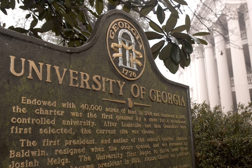
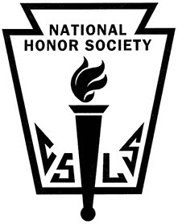

Address: 1321 Whitlow Creek Court, Bishop GA 30621
Contact Imformation: (706)206-2773 or tyler_huff@att.net
I am seeking to find a job in hopes of building up my experience and finding a path which will lead me to a future career. I wish to find a job that will allow me to help save for college and allow me to have other jobs in respect to this one. I have high hopes of creating lifelong relationships and furthering connections which will expose me to real life scenarios, lessons, and experiences. I wish to join a job that will best utilize my skills, facilitate my interests and provide a loving, comfortable environment during my time at the business.
Cumulative GPA: 94.79
Weighted GPA: 3.74
Rank: 87 out of 265
AP/MOWR: 7
Zell Miller Scholarship Recipient
Freshman year: 3.60
Credits Earned: 26
During the school holidays since 2014 to current day, I have cared for two little boys who are now ages 8 and 10. The job schedule is Tuesday through Friday 7a.m. to 4 p.m. My responsibilities include preparing meals for the boys, transporting them to any activity or sporting event, and keeping them entertained either at the park, pool, etc.
I worked at a local restaurant off and on throughout 2015 to 2017. During business hours, I worked as a cashier and part time cook; after hours, I often organized the front counter or dishes. I worked approximately 20 hours per week.
Click here to access the resturants locations and menu
I am responsible and trustworthy, as shown by my accomplishments, relationships and school work.
I am organized with my work schedule and efficiently manage time, never showing up late. I built great social skills through the clubs and activities in which I have participated. I have strong leadership skills which have been developed through clubs, family, and school work.
I have been an active member of this club my 10th, 11th, and 12th year of high school. I served as Event Coordinator during my Junior and Senior year, organizing events such as Relay for Life, Secret Santa, and Miss Legend. I have also had the opportunities to give back to the community by working with the Athens Women’s Shelter and the Homeless Shelter.
My senior year has been my first year as a member of this club, however, it has brought me numerous opportunities to give back my community. I worked at the Volunteer Fire Stations’ Fall Festivals, assembled Teacher Appreciation goody bags for Valentine’s Day and made corn casserole for Teacher Appreciation Day. This club also requires each member to bring in the month’s food choice for Food 4 Kids, allowing me to help my local classmates once a month, eight times out of the year.
I have been a DECA member for two years now. This club prepared me for the business/marketing world and taught me how to write a resume and a cover letter. I learned some very crucial, lifelong business skills and practices in this club. I also participated in raising money for the Wounded Warriors Foundation.
I was a member of this club for three years and firmly believe this club had the biggest impact on me in my high school career. I served as Secretary for FBLA my senior year. I found my passion for business finance and decided my future goals within this club, as well as made lifelong relationships. I traveled to Terry College of Business for opportunities that encouraged me to pursue the finance field. I finished my senior year at the FBLA State Conference where I placed 7th in the Banking competition.
I was a member of this club all four years of high school. I participated in the local Blood Drives and also became Fire Safety and CPR Certified.
I worked within this club all four years of high school by working with primary school and elementary school students while encouraging them to read and do their homework and helping them every step of the way.
I interned at the Oconee Preschool Academy my entire senior year where I got a taste of what it is like being a teacher. I helped the classroom stay organized, cleaned up after activities, and interacted with loving, energetic 4 and 5 year olds.
Thank you in advance for you time and I look forward to hearing from you.
| Time of Day | Monday | Tuesday | Wednesday | Thursday | Friday | Saturday | Sunday |
|---|---|---|---|---|---|---|---|
| Day (8a.m. to 5 p.m.) | School | FREE | FREE | School | FREE | Church | |
| Night (6p.m. to midnight) | FREE | Church | Not Available | FREE | |||